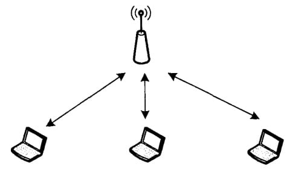
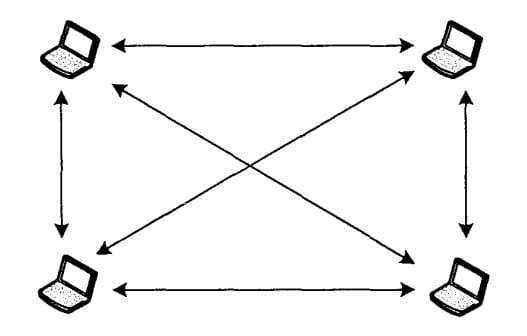
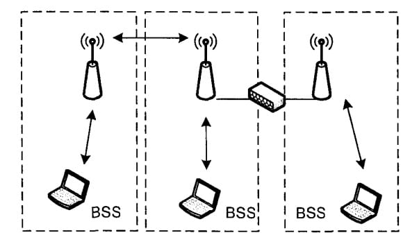

Programming, electronics, lifestyle
IEEE 802.11 — набор стандартов связи для коммуникации в беспроводной локальной сетевой зоне частотных диапазонов 0,9; 2,4; 3,6; 5 и 60 ГГц. Больше на wiki.
Пользователям более известен по названию Wi-Fi, фактически являющемуся брендом, предложенным и продвигаемым организацией Wi-Fi Alliance.
В стандарте IEEE 802.11 определены два способа организации сети:
Infrastructure);Independent), часто также называемый одноранговым (Ad-Hoc).В инфраструктурном режиме функции координации передачи данных выполняет специальный выделенный узел, точка доступа (ТД, Access Point, АР). Беспроводные станции пользователей через нее взаимодействуют друг с другом и машинами в проводной сети. Схема такой сети приведена на рисунок.

В одноранговой (Ad-Hoc) сети центральный узел отсутствует, и все станции являются равноправными членами системы.

Совокупность станций, взаимодействующих друг с другом в рамках одной точки доступа или одной одноранговой сети, носит название базового набора обслуживания (Basic Service Set, BSS), либо независимого базового набора обслуживания (Independed Basic Service Set, IBSS).
Несколько сетей BSS, объединенных с помощью проводной или беспроводной сети, называются расширенным набором обслуживания (Extended Service Set, ESS). Схема такой сети приведена на рисунке.

В ESS могут объединяться только BSS, работающие в инфраструктурном режиме, но не IBSS. Это не значит, что сеть Ad-Hoc не может взаимодействовать с проводными сетями, просто механизмы подобного взаимодействия не описаны в стандарте 802.11; должны быть задействованы методы канального (сетевой мост) или сетевого уровня (маршрутизаторы).
Все станции и точки доступа одной сети ESS и сети BSS обозначаются с помощью идентификатора набора обслуживания (Service Set Inditifier, SSID). Конфигурационный параметр выбирает администратор и обычно он представляет собой набор символов, помогающий пользователю определить, к какой сети относится та или иная точка доступа.
Очень часто хочется использовать для обозначения сетей BSS привычный термин «сегмент», однако такое упрощение неверно. Дело в том, что с точки зрения сетевого уровня один сегмент может включать несколько сетей BSS или даже разные сети ESS. Например, сеть, схема которой приведена на рисунке выше, вполне может представлять собой один широковещательный домен с точки зрения Ethernet и одну подсеть с точки зрения сетевого уровня.
Источник: https://catamobile.org.ua/struktura-seti.html
Каждый Wi-Fi адаптер, а точнее, антенна, на физическом уровне улавливает любые сигналы, пересылаемые устройствами в радиусе действия. Антенна не может не принимать посторонние пакеты.
Wi-Fi адаптер – это железка, и для работы с ней из программы её нужно представить в цифровом виде, этим занимается драйвер.
В следующем, что я здесь пишу до конца я не уверен что есть что. Например, я полагал, что на базе Ad-hoc работает например Wi-Fi Direct, оказалось это не так. Также не понятно, что такое AirDrop. В общем текст ниже я постараюсь обновить в ближайшеим будущем и закрыть все эти вопросы.
Драйвер Wi-Fi адаптера может работать в 6 режимах:
точка доступа (также было упоминание как мастер синхронизации).Обычно этот режим используется в дистрибутивах для пентеста (поиска уязвимостей и взлома сетей). Режим монитора зачастую доступен далеко не на всех адаптерах, для этого нужен специальный драйвер. В первую очередь это обусловлено безопасностью: чтобы не каждый человек мог засорить эфир и спровоцировать обрыв связи других клиентов.
Источники: